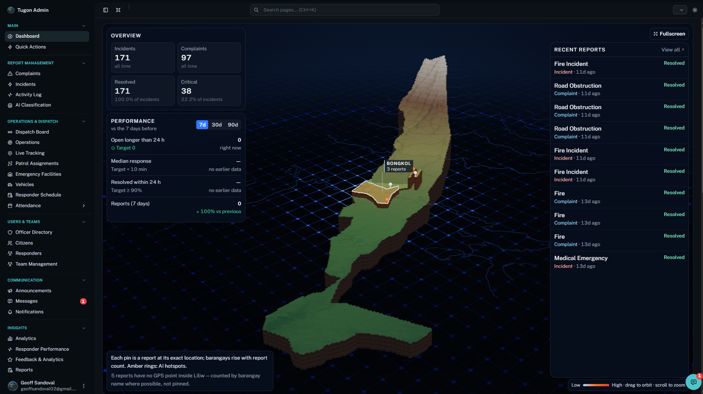

Admin Dashboard
admin-dash.png
Desktop · Administration Portal
Admin Dashboard
The system administrator's control panel. Admins manage accounts and roles, maintain barangay and roster data, and generate the official monthly reports.
- User and role management
- Barangay incident density and unit performance
- One-click Monthly Accomplishment PDF report